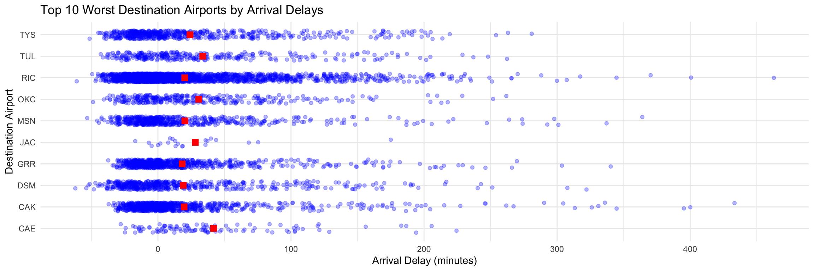

W03 Case Study
Required Libraries
Case Study
Question 1: Which airline has the lowest 75th percentile of departure delay for flights scheduled to leave earlier than noon at JFK, EWR, and LGA?
Code
flights_before_noon <- flights %>%
filter(sched_dep_time < 1200) %>%
group_by(origin, carrier) %>%
summarise(
p75_dep_delay = quantile(dep_delay, 0.75, na.rm = TRUE)
) %>%
arrange(origin, p75_dep_delay)
ggplot(flights_before_noon, aes(x = carrier, y = p75_dep_delay, fill = origin)) +
geom_bar(stat = "identity", position = "dodge") +
labs(
title = "75th Percentile of Departure Delays for Flights Before Noon",
x = "Airline",
y = "75th Percentile of Departure Delay (minutes)"
) +
facet_wrap(~ origin) +
theme_minimal()
EWR: Alaska Airlines (AS) has the lowest 75th percentile of departure delays. JFK: Endeavor Air (9E) has the lowest 75th percentile of departure delays. LGA: Delta Airlines (DL) has the lowest 75th percentile of departure delays.
Question 2: Which origin airport is best to minimize my chances of a late arrival when I am using Delta Airlines?
Code
delta_flights <- flights %>%
filter(carrier == "DL") %>%
group_by(origin) %>%
summarise(mean_arr_delay = mean(arr_delay, na.rm = TRUE),
median_arr_delay = median(arr_delay, na.rm = TRUE),
flights_count = n()) %>%
arrange(mean_arr_delay)
ggplot(delta_flights, aes(x = origin, y = mean_arr_delay, fill = origin)) +
geom_bar(stat = "identity") +
labs(title = "Mean Arrival Delays for Delta Airlines by Origin Airport",
x = "Origin Airport", y = "Mean Arrival Delay (minutes)") +
theme_minimal()
Based on the above bar chart, we can conclude that JFK has the lowest mean arrival delay (it’s actually in the negatives too!) so if you want to minimize your chances of being late, it is best to go with JFK when using Delta Airlines.
Question 3: Which destination airport is the worst airport for arrival delays?
Code
worst_destinations <- flights %>%
group_by(dest) %>%
summarise(
mean_arr_delay = mean(arr_delay, na.rm = TRUE),
median_arr_delay = median(arr_delay, na.rm = TRUE),
num_flights = n()
) %>%
arrange(desc(mean_arr_delay))
top_worst_destinations <- worst_destinations %>%
top_n(10, mean_arr_delay)
ggplot(top_worst_destinations, aes(x = reorder(dest, mean_arr_delay), y = mean_arr_delay)) +
geom_point(color = "black", size = 3) +
labs(
title = "Top 10 Worst Destination Airports by Mean Arrival Delay",
x = "Destination Airport",
y = "Mean Arrival Delay (minutes)"
) +
coord_flip() +
theme_minimal()
Reviewing the scatter plot above, we are able to see that the destination airport with the worst arrival delays is CAE airport being over a 40 minute delay. TUL is behind CAE at close to a 35 minute delay.